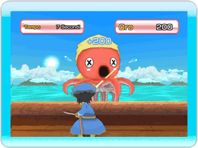
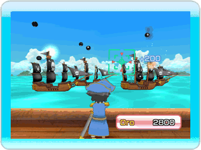
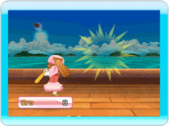

11 |
Evento di azione |
 |
●Evento di azione
Quando sbarchi su un'isola evento, parteciperai a un'evento di azione.
 ●Sconfiggi il polpo! Usa la tua spada (telecomando Wii) contro il polpo e sconfiggilo entro il tempo limite per ottenere oro bonus!
 ●Sfuggi alla navi pirata! Rispondi ai cannoni che sparano dalla nave nemica! Se vieni colpito una sola volta, perdi!
 ●Respingi la meteora! Una meteora sta per colpire la Terra! Respingila con il giusto tempismo e salva la tua nave!
|
 |
 |
 |